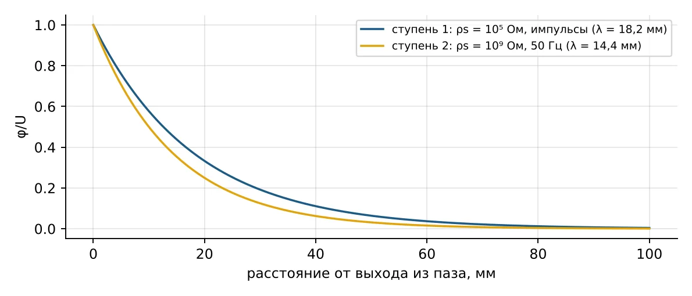
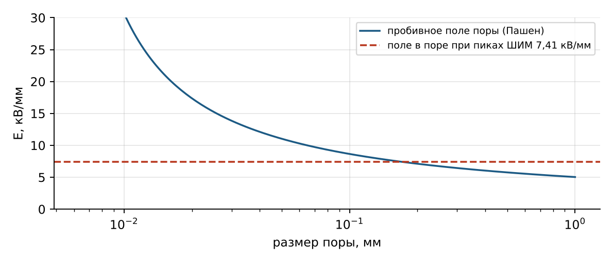
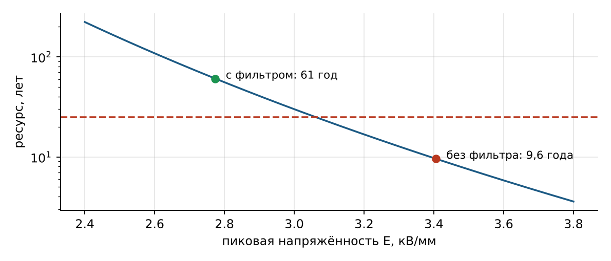
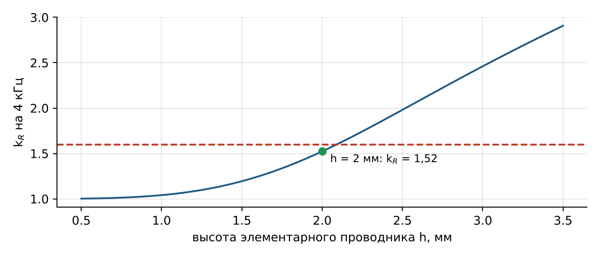
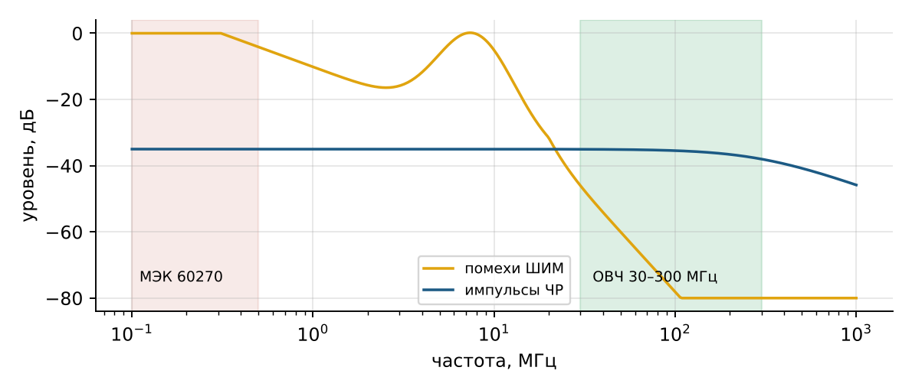
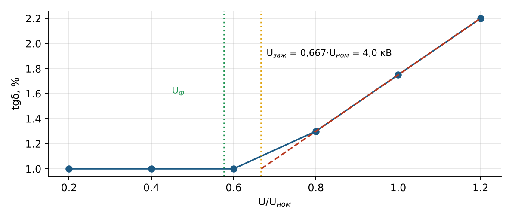

Техника высоких напряжений
Лекция 3 · вариант 1 расчётной работы
Изоляция двигателя и кабеля при питании от ПЧ
Недели 4–6, 10–15: расчёт, противокоронная защита, старение, нагрев, диагностика, испытания
1. Система изоляции статора 6 кВ
Изоляция обмотки статора состоит из корпусной (пазовой) — между медью и заземлённым сердечником, витковой — между витками катушки, и межфазной — в лобовых частях. На 6 кВ применяют слюдосодержащую изоляцию, пропитанную эпоксидным компаундом (вакуумно-нагнетательная пропитка VPI или монолитная технология), класс нагревостойкости F (155 °C).
Толщину корпусной изоляции выбирают по двум критериям: она должна выдержать испытательное напряжение с запасом и длительно работать при пиковых напряжениях ШИМ без ускоренного старения:
(1)
(2)
где Uпик.з = Uпик/√3 = 8,85 кВ — пик фаза — земля, Eдл = 3,5 кВ/мм — длительно допустимая напряжённость при ШИМ. Определяет длительный критерий; округляя вверх с шагом 0,2 мм, получаем δ = 2,6 мм (E = 3,41 кВ/мм). При синусоидальном питании хватило бы 1,7 мм: ШИМ требует почти на миллиметр более толстой гильзы, а значит, меньше меди в пазу и хуже теплоотвод.
2. Противокоронная защита лобовых частей
На выходе стержня из паза поле вдоль поверхности изоляции резко концентрируется у края заземлённого пазового покрытия — возникают скользящие разряды. Их предотвращает полупроводящее покрытие в лобовой части. Вместе с ёмкостью изоляции C0 = ε0εr/δ оно образует распределённую RC-цепь, вдоль которой потенциал спадает с характерной длиной λ:
(3)
Для импульсов ШИМ эквивалентная частота fэкв = 1/(πtф) = 314 кГц, U = 8,85 кВ — требуется λ ≥ 17,7 мм и ρs ≤ 1,05·10⁵ Ом. Для 50 Гц (U = 4,9 кВ) достаточно λ ≥ 9,8 мм, ρs ≤ 2,2·10⁹ Ом. Различие в 10 000 раз одним покрытием не перекрыть, поэтому применяют двухступенчатое покрытие: у паза — слой 10⁵ Ом длиной около 55 мм, далее — 10⁹ Ом длиной около 43 мм. Альтернатива — нелинейное покрытие на карбиде кремния SiC, сопротивление которого само падает с ростом поля.

Рис. 1. Спад потенциала вдоль двух ступеней противокоронного покрытия
3. Диэлектрические потери
(4)
При ёмкости фазы на корпус C = ε0εrS/δ = 73,6 нФ и tgδ = 0,02 потери при 50 Гц — 5,5 Вт, от пульсаций ШИМ (1,5 кВ, 4 кГц) — 83 Вт. Потери выросли в 15 раз, но распределены по 4,8 м² изоляции: тепловой поток 18 Вт/м² нагревает изоляцию толщиной 2,6 мм всего на 0,2 K. Вывод: при ШИМ изоляцию разрушает не нагрев от диэлектрических потерь, а пики напряжения и частичные разряды. Однако tgδ растёт с температурой, и при дефектной (увлажнённой) изоляции возможен тепловой пробой — это проверяют измерением tgδ.
4. Частичные разряды в изоляции кабеля СПЭ
Поле в коаксиальном кабеле наибольшее у экрана жилы:
(5)
В газовой микропоре поле больше в εr раз (непрерывна нормальная составляющая индукции): 2,3·3,22 = 7,41 кВ/мм. Пора разряжается, если это больше её пробивного поля по закону Пашена:
(6)
(p — давление, мм рт. ст.; d — размер поры, см). Чем меньше пора, тем выше её пробивное поле: 0,05 мм — 11,0 кВ/мм, 0,1 мм — 8,65 кВ/мм, 0,2 мм — 7,11 кВ/мм. При пиках ШИМ разряжаются поры крупнее ≈ 0,17 мм, отсюда норма приёмки — поры не крупнее 0,1 мм. Разряды на каждом импульсе (тысячи в секунду) эродируют стенки поры и прорастают в электрические триинги — древовидные каналы, ведущие к пробою.

Рис. 2. Пробивное поле газовой поры и поле в поре при пиках ШИМ
5. Старение и ресурс
Электрическое старение описывает вольт-временная характеристика (кривая жизни):
(7)
Для изоляции статора принято: 30 лет при 3,0 кВ/мм, n = 9. Без фильтра пик 3,41 кВ/мм — ресурс 30·(3,0/3,41)⁹ = 9,6 года; с фильтром 2,77 кВ/мм — 61 год. Большой показатель n делает изоляцию очень чувствительной к пикам: +8 % поля — ресурс вдвое меньше. При ШИМ старение дополнительно ускоряет большое число импульсов в секунду. Тепловое старение подчиняется правилу Монтзингера: +8…10 °C — срок примерно вдвое меньше.

Рис. 3. Кривая жизни изоляции статора и рабочие точки без фильтра и с фильтром
6. Нагрев обмотки и поверхностный эффект
Класс F допускает 155 °C в наиболее нагретой точке. Высшие гармоники тока ШИМ вытесняются к поверхности проводника (скин-эффект), и сопротивление меди для них растёт. Глубина проникновения и коэффициент добавочных потерь элементарного проводника высотой h:
(8)
При 4 кГц и ρ = 2,3·10⁻⁸ Ом·м (медь при 110 °C) δск = 1,21 мм. Проводник 3 мм имеет kR = 2,46, 2 мм — 1,52. Поэтому стержни делят на тонкие элементарные проводники и транспонируют их (стержень Рёбеля). Чем тоньше проводник, тем меньше добавочные потери, но больше изоляции и меньше меди в пазу — выбирают наибольшую высоту, при которой kR допустим.

Рис. 4. Коэффициент добавочных потерь на 4 кГц в зависимости от высоты проводника
7. Диагностика под рабочим напряжением
7.1. Частичные разряды
Кажущийся заряд ЧР измеряют по импульсу тока во внешней цепи. Прибор предварительно калибруют: калибратор подаёт известный заряд Qкал, и сигнал пересчитывают пропорционально:
(9)
Под работающим ПЧ классическая полоса МЭК 60270 (100–500 кГц) и полоса 2–20 МГц забиты помехами: фронты ШИМ и «звон» кабеля дают мощный спектр до десятков мегагерц. Импульсы ЧР длятся наносекунды, и их спектр простирается до сотен мегагерц, поэтому онлайн-контроль ведут в ОВЧ/СВЧ-диапазоне (30–300 МГц и выше) датчиками HFCT, ёмкостными и антенными; дополнительно применяют стробирование по синхроимпульсам СУ ПЧ. Подходы описаны в стандартах серии IEC 60034-27.

Рис. 5. Спектры помех ШИМ и импульсов ЧР; полоса МЭК 60270 и ОВЧ-полоса
7.2. Зависимость tgδ(U)
Пока в изоляции нет ЧР, tgδ не зависит от напряжения. С появлением разрядов в пустотах добавляются потери, и tgδ начинает расти. Напряжение зажигания ЧР находят, продлевая восходящий участок до исходного уровня; прирост tgδ между 0,2 и 1,0 Uном (tip-up) характеризует количество пустот.
| U/Uном | 0,2 | 0,4 | 0,6 | 0,8 | 1,0 | 1,2 |
|---|---|---|---|---|---|---|
| tgδ, % | 1,00 | 1,00 | 1,00 | 1,30 | 1,75 | 2,20 |
(10)
4,0 кВ больше фазного напряжения сети 3,46 кВ — при синусоидальном питании ЧР не было бы. Но пики ШИМ фаза — земля 7–9 кВ выше Uзаж: при питании от ПЧ разряды возникают на каждом импульсе. Отсюда обязательность фильтра и постоянного контроля ЧР.

Рис. 6. Зависимость tgδ(U) и определение напряжения зажигания ЧР
8. Приёмо-сдаточные испытания
Испытание повышенным напряжением промышленной частоты проверяет, что в изоляции нет грубых дефектов. В задании для обмотки статора задано 15 кВ, 1 минута; конкретное значение для реального объекта берут по действующим нормам (ПУЭ, гл. 1.8; ГОСТ IEC 60034-1; документация изготовителя). Обмотка для источника — ёмкость, поэтому мощность испытательного трансформатора определяется ёмкостным током:
(11)
С запасом 1,2 нужен трансформатор не меньше 18,7 кВ·А — из ряда 25 кВ·А.
| № | Операция | Критерий |
|---|---|---|
| 1 | Сопротивление изоляции мегаомметром 2500 В, коэффициент абсорбции R60/R15 | по нормам; абсорбция ≥ 1,3 |
| 2 | tgδ(U) и ЧР при 0,2…1,2 Uном | прирост tgδ, Uзаж > Uф |
| 3 | Испытание 15 кВ 50 Гц, 1 мин | нет пробоя и перекрытия |
| 4 | Повторное измерение сопротивления изоляции | не ниже исходного |
| 5 | Испытание кабеля СПЭ (по заданию — 35 кВ) и проверка экранов | нет пробоя |
| 6 | Оформление протокола и итогового отчёта | — |
Контрольные вопросы
По каким двум критериям выбирают толщину корпусной изоляции и какой из них определяющий при ШИМ?
Зачем нужно противокоронное покрытие и почему для ШИМ оно двухступенчатое?
Почему диэлектрические потери при ШИМ мало влияют на нагрев изоляции?
Почему поле в газовой поре больше, чем в изоляции? Как выбрать допустимый размер поры?
Как пиковое поле влияет на ресурс при n = 9?
Зачем стержень делят на элементарные проводники?
Почему ЧР под работающим ПЧ измеряют в ОВЧ-диапазоне?
Как по зависимости tgδ(U) найти напряжение зажигания ЧР?
Как выбрать мощность испытательного трансформатора?
Литература
Важов В. Ф., Лавринович В. А. Техника высоких напряжений : учебник. — Томск : Изд-во ТПУ.
Базуткин В. В., Ларионов В. П., Пинталь Ю. С. Техника высоких напряжений: изоляция и перенапряжения в электрических системах. — М. : Энергоатомиздат, 1986.
Розанов Ю. К., Рябчицкий М. В., Кваснюк А. А. Силовая электроника : учебник для вузов. — М. : Издательский дом МЭИ.
Ключев В. И. Теория электропривода : учебник для вузов. — М. : Энергоатомиздат.
Stone G. C., Culbert I., Boulter E. A., Dhirani H. Electrical Insulation for Rotating Machines. — 2nd ed. — Wiley–IEEE Press, 2014.
IEC TS 60034-25. Rotating electrical machines — AC electrical machines used in power drive systems — Application guide.
IEC 60034-18-41 / IEC 60034-18-42. Qualification of electrical insulation systems used in rotating machines fed from voltage converters.
IEC 60270. High-voltage test techniques — Charge-based measurement of partial discharges.